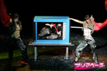
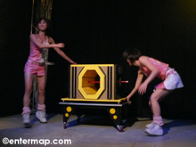

2007年 11月22日
プリマベーラ マジカルイリュージョン「夢は叶えるも の！」制作発表会レポート
秋
葉原ではお馴染みのイリュージョンアイドルユニット「プリマベーラ」さん。11月20日、来年2月に日本青年館大ホールにて行われる公演「マジカルイ
リュージョン 夢は叶えるもの！」の制作発表がプリマベーラさんの事務所内にて行われました。
秋葉原ではドスパラさんのイベントなどでお馴染みの”イリュージョンアイドルユニット”の「プリマベーラ」さん。いよいよ本格的なメジャー活動を行ってい くようです。
今回は秋葉原の話題というわけではないのですが、来年行われる公演の制作発表会を拝見する機会をいただきましたので、こちらのエンターマップにてその様子 をご紹介させていただきます。
「秋葉原マップ」を読んでいる方はご存知かもしれませんが、ここで知らない方のためにもう一度プリマベーラさんのことをご説明します。
■プリマベーラとは？
日本初・女性だけのイリュージョン＆マジックユニット。イタリア語で「これから」という意味だそうです。「これから」に可能性を秘めた女性が集まり結成さ れたイリュージョンユニットで、歌、ダンス、お芝居、イリュージョン、マジック、etc.･･･と枠にとらわれずこれまでにないエンターテイメントを繰り 広げていくそうです。
11/20にプリマベーラさんの事務所内スタジオにて行われた制作発表会にて、まずは来年2月に日本青年館大ホールにて行われるプリマベーラさんのワンマ ン公演、マジカルイリュージョン「夢は叶えるもの！」の説明が行われました。
女性だけのイリュー ジョン＆マジックアイドルユニット「プリマベーラ」さん。
歌やダンス、お芝居だけでなく、マジックやイリュージョンまでも行うエンターテイナーユ ニットです。
参考資料：プリマベーラによるイリュージョンの様子。

■「夢は叶えるもの！」制作発表会
制作発表会は、最初にプリマベーラさんのイリュージョンパフォーマンスの披露から始まりました。公演でも行われるものの一部だそうです。プリマベーラさん のイリュージョンは、何度かドスパラさんの店頭イベントで拝見して見慣れているものの、やはりスタジオで行われるイリュージョンは制限が少ないので更に迫 力のあるものでした。

イリュージョンの途 中で、アカネさん(左)とマミさん(右)が来年2月に行われる公演「夢は叶えるもの！」について少しだけ説明してくれました。
そしてさらにイ リュージョンは続きました。
結構大掛かりなセットを使ってのイリュージョンなどもありました。本格的なものは初めて拝見しましたが、目の前で次々起こる不思議なイリュージョンは迫力 満点。今までイベントで見てきたのはほんのサワリ程度だったんだとわかりました。
「あそこが怪しいな」と思うところはことごとく裏をかかれ、箱の中の人が入れ替わったりするイリュージョンは本当に一瞬の出来事で、いっそ「実はこれは魔 法使いました〜」と言われた方が納得いくような、タネがあるっていう方が逆にすごいようなイリュージョンの数々。
そして、イリュージョンの後にはプリマベーラさん全員揃っての歌＆ダンス。曲はもちろん「あきらめないで 〜 ALL YOUR DREAM」。
この後、2008年2月に行われるマジカルイリュージョン「夢は叶えるもの！」の趣旨とストーリーの説明がありました。
■マジカルイリュージョン「夢は叶えるもの！」
「夢への挑戦！無名のグループが5000人を集める！」
この公演は世界的に例をみない、女の子たちが行う世界レベルの本格的なイリュージョン。ショー全体がストーリー仕立てで、しかもそのストーリーは実話。ス ターを夢見る女の子たちの実際の2年半を綴った等身大の”サクセスストーリー”
そして、夢の第一歩がこの日本青年館公演。その結末は、当日完成する。当日来場した全員が、夢の瞬間の目撃者となる･･･。
2008年2月、日本青年館大ホールにて行われるプリマベーラさんのワンマン公演「夢は叶えるもの！」の概要は大体こんな感じだそうです。秋葉原やイベン ト会場ではお馴染みとはいえ、全国的にはまだまだ無名のプリマベーラさんが、いきなり日本青年館大ホールという大きなステージで公演を行います。プリマ ベーラさんらしくイリュージョン、歌、ダンスが盛りだくさんな内容になっているそうです。そしてその内容はストーリー仕立てになっています。
ストーリー
女の子たちがスターを夢見てオーディションを受けるところから始まる。オーディションは全員不合格！スターになるため残された道はイリュージョンユ ニットを結成すること。
特訓の日々が続く！失敗の連続の中、厳しくも辛い訓練を積んでいく。
初仕事！自信満々の中行うが仲間とぶつかり合ったり、観客がいない現実に挫折。
決意！夢を叶えるために厳しい現実の中で戸惑い、悩み、苦しむ。”あきらめない”を合言葉にメンバーがひとつになり決意する。
そして、その夢の第一歩である日本青年館公演当日！その夢の結末は、当日完成されます。当日来場された全員が、夢が叶う瞬間の目撃者になります。
これは、プリマベーラさんのこれまでのリアルな軌跡、自伝的内容だそうです。それはこの後のプリマベーラさんのコメントなどからも強く感じました。今まで の苦労やこれからの希望など、強い思いが込められていました。
「夢を叶えるもの！」はメッセージでありながら、自らの夢への挑戦でもあるとのこと。出演者・スタッフが夢を掴み、見ていただく人たちに夢と希望を届けた い、そんな思いで作られています。
★イベント概要
タイトル：マジカルイリュージョン 夢は叶えるもの！
公演日時：2008年2月1日/18:30(開演) 2日/14:00(開演) /18:00(開演)
別枠/3日(チャリティコンサート1公演)
会場：日本青年館大ホール(1360名収容) 東京都新宿区霞ヶ丘町7-1
入場料：Ｓ席 7,200円/ Ａ席 6,300円 /自由席 5,400円
チケット取扱い：チケットぴあ/夢は叶えるもの実行委員会
主催：夢は叶えるもの実行委員会
制作：株式会社フォーチュン
※詳しくは夢は叶えるもの！オフィシャルサ イトにて。
このあと、プリマベーラさんの紹介がありました。内容については冒頭にある通りです。そしてメンバー9人ひとりひとりがご挨拶。さらに公演に際し、4名が サポーターとして参加されています。まだ増えるかもとのこと。
メンバーの詳細はこちら→プ リマベーラメンバー紹介ページ
プリマベーラを代表 してクミさんからご挨拶。
プリマベーラさんは2005年9月から活動を開始し、今回の制作発表が行われたこのスタジオも、元は倉庫でボロボロだっ たそうです。”このスタジオから世界へ”を合言葉に、挑戦の第一歩は今度の公演になるとのこと。
次に質疑応答の時間がありました。
5000人をどのよ うに魅了するのか？という質問に対して、リーダーのカオリさんは、「自分たちが夢に向かっていく姿、あきらめない気持ち、そして私たちの心の叫びを見て欲 しいです。」とコメント。
私もひとつ質問させていただきました。公演はストーリー仕立てということなので、演技でやる部分とリアルな部分の線引きってあるのかをお聞きしました。ア カネさんが答えてくれたのですが、「ひとことでいえば本当にリアルなまま伝えたいと思っています。」ということでした。哀しいこと辛いこといろんなこと、 いろんなことがあって、それを本当のストーリーとして伝えていきたいそうです。
他に、「5000人ってどうやって集めるの？」という質問に対しては、マミさんが回答。「5000人って自分の目で見たことないんです。どれだけすごい数 なのかって本当に不安なんですけど、でも、ここまで来たら集めるしかない！絶対みんなにみてもらうしかない！って思ってます。もう、今さら後には引けな い。みんなが一体になって、本当にひとつになって5000人集めるパワーでがんばっていきたいと思います！もうとりあえずやるしかありません！」。マミさ んらしい回答でした。
最後に、全員集合写真を撮影。
この後囲み取材もあったのですが、残念ながら時間の都合がつかなかったので、他のメディアにてご覧下さい。
マジック＆イリュージョンは、それだけでも充分に面白いエンターテインメント。しかもプリマベーラさんはそれを行うのが美少女たちということで、更に華や かなものになっています。でもやっていることは本格的なイリュージョン。見るというエンターテインメントでこれ以上のものってなかなかないのでは？更に更 に、歌にダンスまでもあるのです！
そして来年2月の日本青年館公演、マジカルイリュージョン「夢は叶えるもの！」は、これまでのプリマベーラさんの自伝的内容として、そして今後のプリマ ベーラさんが飛躍する第一歩の活動として、とにかく必見の公演になりそうです。
P.S.
11月23日(金・祝)はドスパラアキバ店さんにてプリマベーラさんのイベントがあります！
→プリマと遊ぼう！第二回ギャロップレーサーオンライン対戦イベント！！
●夢は叶えるもの！オフィシャルサイト
●Primavera 〜プリマベーラ〜 Official Web Site
関連記事
●イリュージョンアイドルユニット「プリマベーラ」 ドスパラお披露目イベントレポート
●7/15(日) プリマベーラ ドスパライベント in 秋葉原 レポート
●プリマベーラ (clover) CD&DVD発売記念キャンペーンイベント
●大澤とも 「イマジネーション〜幻想の世界へ〜」DVD発売記念イベント
関連リンク
●日本青年館